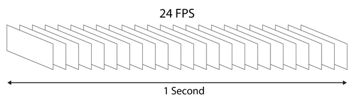

Basic Computer Vision Project
Table of Contents
ATTENTION
Tout plagiat, ou tentative de plagiat, ainsi que toute présentation de travaux (ou données), complets ou partiels, dont vous n'êtes pas l'auteur original sera sanctionné par un 0 et sera signalé à la scolarité.
1 Introduction
Ce projet consiste en l'analyse et l'optimisation des performances d'un code donné qui a pour but d'appliquer des transformations sur du contenu vidéo brut (RGB) non compressé stocké dans un fichier.
R = Rouge ou Red
G = Vert ou Green
B = Bleu ou Blue
IA = Inférence Artificielle (pas Intelligence)
2 Vidéos et Caméras:

Figure 1: Représentation visuelle d'une seconde de flux vidéo à 24 FPS
Une vidéo est généralement considérée comme étant une séquence d'images (ou frames) qui défilent dans le temps 1.
Figure 3: Exemple de capteurs APS Sony
Parmi les métriques de qualité vidéo, on compte le nombre de frames par seconde (FPS) qui est définit par l'oscillateur (Crystal) qui enclenche le capteur APS (Active-Pixel Sensor) 3 à chaque top d'horloge. Par exemple, sur les caméras vidéos que l'on trouve dans une grande partie de l'électronique de consommation, les fréquences des oscillateurs varient entre 24Hz (moyen gamme, 24FPS) et +60Hz (haut de gamme, +60FPS).
Figure 4: Caméra UHS
Sur des caméras ultra haute vitesse (Ultra High Speed) 4, les oscillateurs utilisés peuvent atteindre des fréquences de 1GHz (1 milliard de FPS ou 1 frame par nano seconde).
https://www.phantomhighspeed.com/products/cameras/veo/veo1310
Le capteur APS (appelé aussi CMOS) est une matrice bidimentionnelle de photodiodes qui capturent chacune l'intensité et la couleur de la lumière et retournent un signal électrique analogique. Ce signal analogique est ensuite échantillonné et convertit en un signal numérique encodé sur 1 octet par un ADC (Analog to Digital Converter). Chacun de ces octets représente numériquement l'intensité d'une des trois couleurs de base (RGB) qui encodent une palette de 16 millions de couleurs (224 = 16.777.216 avec 3 octets = 3 x 8 = 24 bits). Les photodiodes du capteur APS sont organisées par groupes de 3 pour former un pixel (Picture element). Chaque photodiode est munie d'un filtre de couleur: R, G, ou B, comme dans la figure 5.
Figure 5: Capteur APS CMOS
Le capteur APS est principalement caractérisé par sa largeur (width - W) et sa hauteur (height - H), qui permettent de définir sa résolution (et donc celle de l'image), R = H x W pixels ainsi que sa densité en photodiodes: 3 x W x H photodiodes. Donc, une image (ou frame) est une matrice de pixels (RGB) avec une hauteur (H ou nombre de lignes) et une largeur (W ou nombre de colonnes) prédéfinies. Pour un capteur de largeur W=4.000.000 et de hauteur H=4.000.000, on peut obtenir une image de 16 mégapixels de résolution maximale.
Lorque la caméra est activée, le courant électrique est contrôlé par l'oscillateur qui, à chaque top ascendant, active le capteur APS qui fournit W x H x 3 signaux analogiques à l'ADC qui les convertit en valeurs numériques et les enregistre dans une mémoire temporaire (buffer) dont la taille est de W x H x 3 octets.
Pour un capteur de largeur W=1280 et de hauteur H=720, il faut donc un frame buffer de: 1280 x 720 x 3 = 2.764.800 octets = 2.6 MiB. Si le capteur oscille à une fréquence de 24Hz (24FPS) et sachant qu'un frame nécessite 2.6 MiB de stockage mémoire, stocker une seconde nécessite un buffer de 24 x 2.6 MiB = 62.4 MiB. Pour 60FPS: 60 x 2.6 MB = 156 MiB.
3 Context:
Depuis quelques années, l'Inférence Artificielle (intelligence est un bien grand mot pour qualifier le procédé) et les réseaux de neurones sont de plus en plus utilisés afin d'effectuer des tâches qui étaient exclusivement déléguées aux humains. Par exemple, les entreprises américaines Tesla & Comma AI ont réussi à entraîner plusieurs réseaux de neurones à la conduite de véhicules automobiles en n'utilisant que des caméras (plusieurs pour le "Tesla autopilot" et une seule pour le "Comma AI Open Pilot"). Dans les véhicules d'autres constructeurs, plusieurs capteurs sont combinés, en plus des caméras, afin d'effectuer l'analyse de scène sur laquelle se basera la prise de décision. Même si les véhicules Tesla sont munis de capteurs, ils restent une source de données secondaire pour l'autopilot. Cet exploit est souvent attribué aux avancements dans l'exploitation des réseaux de neurones à convolutions, mais le plus important est la quantité et la qualité des données - qui nourrissent les réseaux de neurones - extraites d'un simple flux vidéo avec les algorithmes de traitement d'images. Avant de charger les frames vidéo dans le réseau de neurones, plusieurs analyses sont effectuées (séquentiellement et en parallèle). Parmi ces analyses:
1 - Inversion des couleurs (color inversion) L'inversion des couleurs d'un frame permet de créer un mask négatif utilisé pour l'analyse de profondeur afin d'approximer les dimensions, en 3D, des objets détectés.
2 - Détection des contours
Afin d'effectuer l'analyse de contours avec l'algorithme de Sobel, l'image doit être convertie en niveau de gris afin d'éviter les artefacts dus à la variation de couleurs (contrast). Il existe plusieurs algorithmes de conversion: échantillonage, pondération des composantes RGB, … L'échantillonage étant souvent plébicité pour la simplicité des circuits électroniques qui ne nécessitent aucune unité de calcul. Par contre, l'algorithme avec pondérations nécessite des unités de multiplication et d'addition flottantes et des convertisseurs flottant-entier. La différence entre les deux algorithmes réside principalement dans la qualité de l'image après conversion.
Après la conversion en niveau de gris, les filtres de Sobel (vertical & horizontal) sont appliqués (convolution) au frame afin de tracer les contours des objets présents dans l'image. C'est sur la base de ces contours que le réseau de neurones tentera d'identifier les objets en classifiant leur forme.
Il existe plusieurs algorithmes de détection de contours, par exemple: Kirsch edge filter et Prewitt edge filter.
4 Travail à effectuer:
Vous avez pour tâche d'analyser et d'améliorer les performances des codes fournis en documentant et justifiant les étapes suivies (fructueuses ou pas). Pour ce faire, il vous faut respecter un protocol expérimental rigoureux pour ne pas laisser de place à des instabilités inexplicables.
4.1 Extraire les informations sur le processeur de votre machine:
IMPORTANT: Définir si vos expériences ont été effectuées sur une machine réelle ou sur une machine virtuelle. Il est préférable que les mesures soient faites sur une machine réelle avec Linux installé en natif.
Dans le répertoire de votre rendu du projet, vous devez fournir un répertoire nommé "arch" contenant deux répertoires "cpu" et "caches" populés comme suit:
$ mkdir arch arch/cpu arch/caches
Version du noyau de l'OS:
$ uname -a > arch/OS.txt
Version du compilateur gcc:
$ gcc --version > arch/gcc.txt
Version de la libc:
$ ldd --version > arch/ldd.txt
Informations sur le processeur:
$ cat /proc/cpuinfo > arch/cpu/cpuinfo #La configuration du cache d'instructions L1: $ cat /sys/devices/system/cpu/cpu0/cache/index0/* > arch/caches/L1i #La configuration du cache de données L1: $ cat /sys/devices/system/cpu/cpu0/cache/index1/* > arch/caches/L1d #La configuration du cache de données L2: $ cat /sys/devices/system/cpu/cpu0/cache/index2/* > arch/caches/L2 #La configuration du cache de données L3: $ cat /sys/devices/system/cpu/cpu0/cache/index3/* > arch/caches/L3
Pour ajouter les sorties des outils lstopo ou likwid-topology:
$ lstopo-nographics > arch/lstopo.txt $ likwid-topology > arch/likwid-topology.txt
Si vous utilisez d'autres compilateur que GCC, i.e.: LLVM (clang, zapcc, aocc), Intel C/C++ Compiler (ICC), Oracle C/C++ Compiler (Sun Studio), … vous devez spécifier la version des outils.
#ICC $ icc --version > arch/icc.txt
#LLVM $ clang --version > arch/clang.txt
#SunCC $ suncc -V > arch/suncc.txt
4.2 Analyse des performances et optimisation:
L'objectif global de l'optimisation est de faire en sorte que le code à exécuter sur l'architecture cible exploite convenablement toutes les ressources disponibles (multi-coeur, SIMD, synchronisation, …) et au bon moment afin de minimiser le temps des traitements et économiser de l'énergie électrique (Watts). En réalité, l'optimisation de code est un procédé qui, dans un environement (CPU, OS, langages, compilateurs, …) bien conçu, ne devrait pas exister. Malheureusement, ou heureusement, les architectures CPU modernes sont de plus en plus complexes (mal/peu documentées) et les besoins en calcul de plus en plus nécessaires et divers (simulation numériques, IA, traitement de signal, compression, …). Aussi, les langages et les compilateurs doivent non seulement s'adapter aux nouveaux patterns des codes émergents, mais aussi garantir un minimum de performance, ou au moins la possibilité de piloter le compilateur afin d'obtenir un codé généré décent.
L'optimization peut se faire à plusieurs niveaux:
4.2.1 Au niveau du code:
- Étudier si les implémentations sont adaptées à l'architecture cible (votre machine)
- Étudier les patterns d'accès au données (origine: mémoire, caches, …)
- Étudier si l'imbrication des boucles est nécessaire
- Étudier si les I/O disques peuvent être réduites ou leur latence minimisée
- Le code est-il vectorisé ou vectorisable?
- Le code est-il parallèle ou parallélisable?
- Utilisation de librariries externes BLAS, MKL, … (il faudra expliquer en détail pourquoi et comment)
4.2.2 À la compilation:
- Étudier les performances du code avec plusieurs flags d'optimisation et les comparer dans un tableau
- Étudier le code assembleur généré des fonctions cibles pour chacun des flags utilisés
Note: . Vous devez produire plusieurs versions des fonctions (en C ou en assembleur, …) cibles et comparer leurs performances dans un tableau . Vous devez aussi fournir les courbes qui permettent de visualiser l'évolution des performances de chacun des codes.
4.3 Stabilité de l'environnement de mesures:
- S'assurer que la machine cible est connectée au secteur, cela évite les ajustements dynamiques de la fréquence du processeur.
S'assurer que la fréquence du processeur est fixe (de préférence au maximum) durant les mesures.
Commande pour consulter la configuration des coeurs 0, 1, 2, et 3 en terme de fréquence et de possiblités de fréquences.
$ cpupower -c 0-3 frequency-info
Commandes pour configurer la fréquence du processeur.
#En utilisant le gouverneur performance du noyau Linux $ cpupower -c 0-3 frequency-set -g performance
#En spécifiant manuellement la fréquence $ cpupower -c 0-3 frequency-set -u 3.8GHz
Les codes fournis sont munis des fonctions nécessaires au calcul de la déviation standard et des statistiques (min, max, avg, …) relatives aux mesures effectuées. Vous trouverez aussi un makefile et des scripts exemples pour lancer les expériences, convertir les fichiers depuis le format vidéo brut vers le format mp4 et générer les courbes de performance. Il vous faudra aujouter au makefile une règle par variante et modifier le code source avec les directives du pré-processeur nécessaires pour ne compiler que la variante spécifiée.
Tous les coups sont permis afin d'améliorer les performances: réécriture des fonctions en intrinsics Intel, en assembleur, librarie externe, …
Si vous décidez d'utiliser des outils d'analyse de performance comme VTune, MAQAO, perf, … vous devez fournir les sorties de ces outils dans un répertoire qui porte le nom de l'outil.
Pour lancer une analyse sur la version de base:
$ ./run
Les résultats ainsi que les courbes sont dans le répertoire "data_runs" et dans les sous répertoires O1, O2, …
5 Rapport:
Vous devez fournir un rapport avec une analyse algorithmique des méthodes proposées ainsi que les analyses (et la comparaison) des performances des différentes implémentations. Ce rapport doit commencer avec une introduction qui reformule l'objectif du rapport/projet et qui présente les sections à venir de manière sommaire. Évitez de mettre des longs listings de code dans le corps du rapport (pas plus de 10 lignes)., sinon mettre le code dans un appendice à la fin du rapport. Il vous faudra citer vos sources (publicatiosn scientifiques, thèses, articles sur le web, …) en les listant à la fin du rapport dans la section: Références et bibliographie.
Votre rapport devra contenir une table des figures, ainsi qu'une table des matières. Il faudra aussi définir les acronymes utilisés dans une table.
6 Rendu final:
Vous devez fournir une archive tar compressée (aob_cv_NOM_PRENOM.tar.gz) contenant:
- Le code source des différentes variantes implémentées
- Les données de vos mesures pour chacune des variantes (i.e.
data_runs) - Le rapport en format PDF
Pour obtenir une archive compressée:
$ tar -cf aob_cv_NOM_PRENOM.tar $ gzip -9 aob_cv_NOM_PRENOM.tar
Pour extraire le contenu de l'archive du projet:
$ tar -xf aob_cv_proj.tar.gz
7 Outils à installer:
7.1 Nécessaires
gnuplot : outil de représentation graphiques
ffmpeg : outil de conversion vidéo
7.2 Facultatifs maits utiles
perf : outil d'analyse de performances
likwid : suite d'outils d'analyse de performances
hwloc (lstopo) : outil qui extrait la configuartion et la topologie de la machine
maqao : outil d'analyse de performances
7.3 Liens utiles
Compiler explorer : https://godbolt.org
Guide des intrinsics d'Intel : https://software.intel.com/sites/landingpage/IntrinsicsGuide/#
Guide d'optimisation d'Agner Fog : https://www.agner.org/optimize/